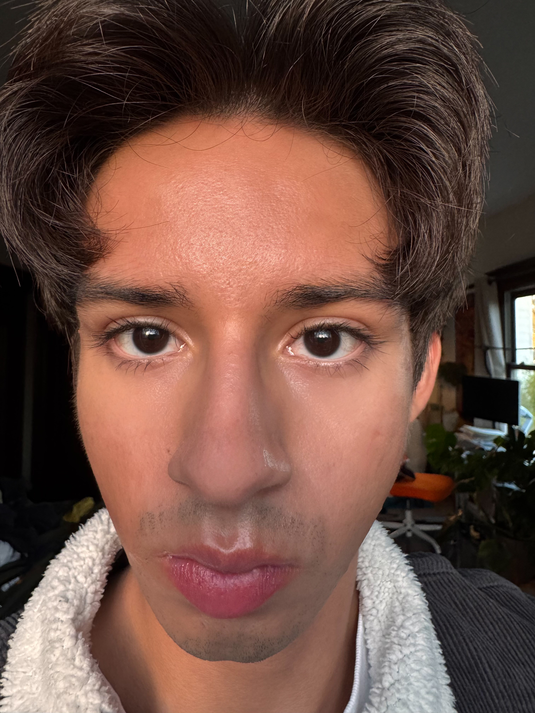
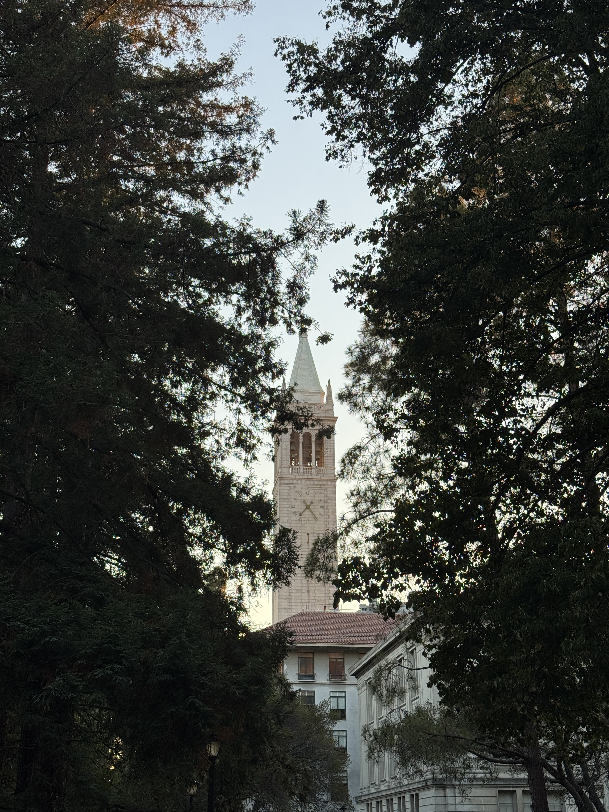

Project 0: Becoming Friends with Your Camera
CS180 • Fall 2025
Back to Home ›
Part 1: The Right Way vs. The Wrong Way

Wrong Way
 Right Way
Right Way
Part 2: Architectural Perspective Compression

Telephoto shot
 Wide shot
Wide shot
Part 3: The Dolly Zoom
 Dolly Zoom
Dolly Zoom